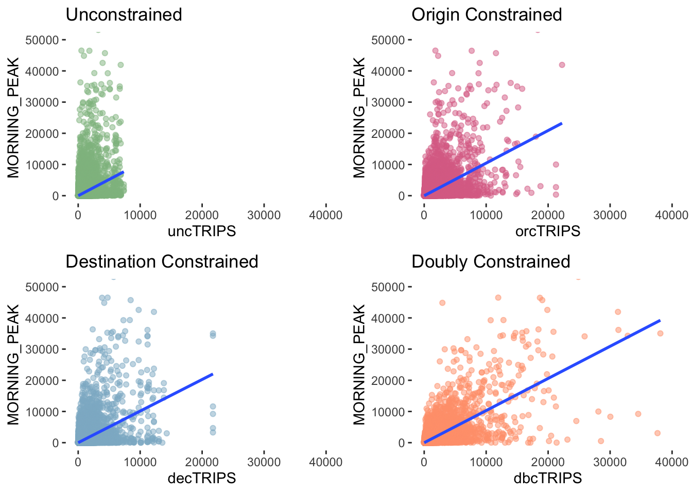

pacman::p_load(tmap, sf, sp, DT, stplanr, tidyverse, reshape2, performance, ggpubr, olsrr, corrplot, GWmodel, gtsummary, knitr)Applied Spatial Interaction Models
A case study of Singapore public bus commuter flows
1. Overview
Urban mobility and public transport service planning are critical challenges for transport operators and urban planners. Questions on the residents commute patterns and the bus service demands are traditionally explored through commuter surveys. Despite providing valuable insights, these surveys are costly, time-consuming, and the data require extensive cleaning and analysis, often rendering the findings outdated by the time they are ready for use.
In contrast, the digitization of urban infrastructure, such as public buses, trains, and roads, offers a wealth of data that can capture movement patterns over time and space. The advent of pervasive computing technologies like GPS and smart cards for transport has led to an explosion of geospatial data. However, the capability to effectively analyze this data and extract valuable information is not in the same pace, leading to suboptimal returns on investment in data collection and management.
This exercise is propelled by two key motivators: the utilization of open data for policy-making, and the scarcity of practical research demonstrating the use of geospatial data science and analysis (GDSA) in decision-making processes.
2. Methods
Geospatial Data Science
Derive an analytical hexagon data of 375m to represent the traffic analysis zone.
Construct an OD matrix of commuter flows for the following time intervals:
- Weekday morning peak from 6am to 9am (selected time interval)
- Weekday evening peak from 5pm to 8pm
- Weekend/holiday morning peak from 11am to 2pm
- Weekend/holiday evening peak from 4pm to 7pm
Display the O-D flows of the passenger trips.
Describe the spatial patterns revealed by the geovisualisation.
Assemble propulsive and attractiveness variables by using aspatial and geospatial from publicly available sources.
Compute a distance matrix by using the analytical hexagon data.
Spatial Interaction Modelling
Create four log-based Poisson spatial interactive models to determine propulsiveness and attractiveness factors affecting urban commuting flows at the selected time interval.
- Unconstrained Model
- Origin (production) constrained model
- Destination (attraction) constrained model
- Doubly constrained model
Calibrate spatial interactive models using propulsiveness and attractiveness factors.
Compare the modelling results of the four spatial interactive models.
3. Load packages
R package functions
The analysis involves the following packages:
sf handles spatial data. tidyverse handles attribute data. DT enables R data objects (matrices or data frames) to be displayed as tables on HTML pages. stplanr analyses OD matrix. reshape2 restructures and aggregates data. performance contains utilities for computing measures to assess model quality. ggpubr arrange and annotate multiple plots. olsrr builds OLS and performing diagnostics tests. GWmodel calibrate geographical weighted family of models. corrplot enables multivariate data visualisation and analysis. tmap plots choropleth maps.
3. Import data
We will be using the following geospatial (busstop, mpsz) and aspatial (odbus) datasets.
busstop is a geospatial dataset containing the detailed information for all bus stops currently serviced by buses, including bus stop code, road name, description, location coordinates.
The output indicates that the geospatial objects are point features. There are 5161 features and 3 fields. It is in SVY21 projected coordinates system with XY dimension.
Source: LTA DataMall (Postman URL)
Show the code
busstop <- st_read(dsn = "data/geospatial", layer = "BusStop") %>%
st_transform(crs = 3414)Reading layer `BusStop' from data source
`/Users/chockwankee/Documents/chockwk/ISSS624_Geospatial_Analytics/Take_home_Ex/Take_home_Ex02/data/geospatial'
using driver `ESRI Shapefile'
Simple feature collection with 5161 features and 3 fields
Geometry type: POINT
Dimension: XY
Bounding box: xmin: 3970.122 ymin: 26482.1 xmax: 48284.56 ymax: 52983.82
Projected CRS: SVY21Show the code
glimpse(busstop)Rows: 5,161
Columns: 4
$ BUS_STOP_N <chr> "22069", "32071", "44331", "96081", "11561", "66191", "2338…
$ BUS_ROOF_N <chr> "B06", "B23", "B01", "B05", "B05", "B03", "B02A", "B02", "B…
$ LOC_DESC <chr> "OPP CEVA LOGISTICS", "AFT TRACK 13", "BLK 239", "GRACE IND…
$ geometry <POINT [m]> POINT (13576.31 32883.65), POINT (13228.59 44206.38),…mpsz is is a geospatial dataset of the Master Plan 2019, a forward looking guiding plan for Singapore’s development in the medium term over the next 10 to 15 years published in 2019.
The output indicates that the geospatial objects are multipolygon features. There are 332 features and 6 fields. It is in WGS84 projected coordinates system with XY dimension.
Source: URA (Download here)
Show the code
mpsz <- st_read(dsn = "data/geospatial", layer = "MPSZ-2019") %>%
st_transform(crs=3414)Reading layer `MPSZ-2019' from data source
`/Users/chockwankee/Documents/chockwk/ISSS624_Geospatial_Analytics/Take_home_Ex/Take_home_Ex02/data/geospatial'
using driver `ESRI Shapefile'
Simple feature collection with 332 features and 6 fields
Geometry type: MULTIPOLYGON
Dimension: XY
Bounding box: xmin: 103.6057 ymin: 1.158699 xmax: 104.0885 ymax: 1.470775
Geodetic CRS: WGS 84Show the code
glimpse(mpsz)Rows: 332
Columns: 7
$ SUBZONE_N <chr> "MARINA EAST", "INSTITUTION HILL", "ROBERTSON QUAY", "JURON…
$ SUBZONE_C <chr> "MESZ01", "RVSZ05", "SRSZ01", "WISZ01", "MUSZ02", "MPSZ05",…
$ PLN_AREA_N <chr> "MARINA EAST", "RIVER VALLEY", "SINGAPORE RIVER", "WESTERN …
$ PLN_AREA_C <chr> "ME", "RV", "SR", "WI", "MU", "MP", "WI", "WI", "SI", "SI",…
$ REGION_N <chr> "CENTRAL REGION", "CENTRAL REGION", "CENTRAL REGION", "WEST…
$ REGION_C <chr> "CR", "CR", "CR", "WR", "CR", "CR", "WR", "WR", "CR", "CR",…
$ geometry <MULTIPOLYGON [m]> MULTIPOLYGON (((33222.98 29..., MULTIPOLYGON (…odbus is an aspatial dataset containing the number of trips by weekdays and weekends from origin to destination bus stops. It reflects the passenger trip traffic and the most recent dataset from October 2023 will be used.
The output indicates 5,694,297 records and 7 fields.
Source: LTA DataMall (Postman URL)
Show the code
odbus = read_csv("data/aspatial/origin_destination_bus_202310.csv")
glimpse(odbus)Rows: 5,694,297
Columns: 7
$ YEAR_MONTH <chr> "2023-10", "2023-10", "2023-10", "2023-10", "2023-…
$ DAY_TYPE <chr> "WEEKENDS/HOLIDAY", "WEEKDAY", "WEEKENDS/HOLIDAY",…
$ TIME_PER_HOUR <dbl> 16, 16, 14, 14, 17, 17, 17, 7, 14, 14, 10, 20, 20,…
$ PT_TYPE <chr> "BUS", "BUS", "BUS", "BUS", "BUS", "BUS", "BUS", "…
$ ORIGIN_PT_CODE <chr> "04168", "04168", "80119", "80119", "44069", "2028…
$ DESTINATION_PT_CODE <chr> "10051", "10051", "90079", "90079", "17229", "2014…
$ TOTAL_TRIPS <dbl> 3, 5, 3, 5, 4, 1, 24, 2, 1, 7, 3, 2, 5, 1, 1, 1, 1…4. Create Analytical Hexagons
According to Statista, the average walking distance on a commute trip in Singapore is 396 meters. 
As an estimation, the maximum walking distance is 792m and the cellsize of analytical hexagon grid is set to 750m.
Show the code
busstop_mpsz <- st_intersection(busstop, mpsz) %>%
select(BUS_STOP_N, SUBZONE_C)
glimpse(busstop_mpsz)Rows: 5,156
Columns: 3
$ BUS_STOP_N <chr> "13099", "13089", "06151", "13211", "13139", "13109", "1311…
$ SUBZONE_C <chr> "RVSZ05", "RVSZ05", "SRSZ01", "SRSZ01", "SRSZ01", "SRSZ01",…
$ geometry <POINT [m]> POINT (28696.2 30905.64), POINT (28303.29 30901.45), …Show the code
area_hexagon_grid <- st_make_grid(busstop_mpsz,
cellsize = 750,
crs = 3414,
what = "polygons",
square = FALSE)
area_hexagon_gridGeometry set for 2299 features
Geometry type: POLYGON
Dimension: XY
Bounding box: xmin: 3220.122 ymin: 26049.09 xmax: 48970.12 ymax: 50947.32
Projected CRS: SVY21 / Singapore TM
First 5 geometries:Show the code
hexagon_grid_sf = st_sf(area_hexagon_grid) %>%
mutate(INDEX = row_number()) %>%
rename(geometry = area_hexagon_grid,
index = INDEX)
glimpse(hexagon_grid_sf)Rows: 2,299
Columns: 2
$ index <int> 1, 2, 3, 4, 5, 6, 7, 8, 9, 10, 11, 12, 13, 14, 15, 16, 17, 18…
$ geometry <POLYGON [m]> POLYGON ((3595.122 26698.61..., POLYGON ((3595.122 27…Show the code
hexagon_busstop <- st_join(hexagon_grid_sf, busstop,
by = c("geometry" = "geometry")) %>%
drop_na()
glimpse(hexagon_busstop)Rows: 5,151
Columns: 5
$ index <int> 21, 40, 42, 42, 60, 61, 61, 61, 61, 62, 78, 79, 80, 80, 80,…
$ BUS_STOP_N <chr> "25059", "25751", "26379", "26369", "25741", "26399", "2571…
$ BUS_ROOF_N <chr> "UNK", "B02D", "NIL", "NIL", "B03", "NIL", "B01C", "B02C", …
$ LOC_DESC <chr> "AFT TUAS STH BLVD", "BEF TUAS STH AVE 14", "YONG NAM", "SE…
$ geometry <POLYGON [m]> POLYGON ((3970.122 27348.13..., POLYGON ((4345.122 …Show the code
od <- st_join(hexagon_grid_sf, busstop_mpsz,
by = c("geometry" = "geometry"))
glimpse(od)Rows: 6,624
Columns: 4
$ index <int> 1, 2, 3, 4, 5, 6, 7, 8, 9, 10, 11, 12, 13, 14, 15, 16, 17, …
$ BUS_STOP_N <chr> NA, NA, NA, NA, NA, NA, NA, NA, NA, NA, NA, NA, NA, NA, NA,…
$ SUBZONE_C <chr> NA, NA, NA, NA, NA, NA, NA, NA, NA, NA, NA, NA, NA, NA, NA,…
$ geometry <POLYGON [m]> POLYGON ((3595.122 26698.61..., POLYGON ((3595.122 …write_rds(hexagon_busstop, "data/rds/hexagon_busstop.rds")
write_rds(od, "data/rds/od.rds")5. Prepare OD Matrix
Weekday Morning
The selected time interval is weekday morning peak from 6am to 9am.
Show the code
odbus$ORIGIN_PT_CODE <- as.factor(odbus$ORIGIN_PT_CODE)
odbus$DESTINATION_PT_CODE <- as.factor(odbus$DESTINATION_PT_CODE)
odbus6_9 <- odbus %>%
filter(DAY_TYPE == "WEEKDAY") %>%
filter(TIME_PER_HOUR >= 6 & TIME_PER_HOUR <= 9) %>%
group_by(ORIGIN_PT_CODE, DESTINATION_PT_CODE) %>%
summarise(TRIPS = sum(TOTAL_TRIPS))
od1 <- left_join(odbus6_9, od,
by = c("ORIGIN_PT_CODE" = "BUS_STOP_N")) %>%
rename(ORIGIN_BS = ORIGIN_PT_CODE,
DESTIN_BS = DESTINATION_PT_CODE,
ORIGIN_SZ = SUBZONE_C)
od1$ORIGIN_BS <- as.factor(od1$ORIGIN_BS)
duplicate <- od1 %>%
group_by_all() %>%
filter(n()>1) %>%
ungroup()
od1 <- unique(od1)
od1 <- left_join(od1, od,
by = c("DESTIN_BS" = "BUS_STOP_N")) %>%
rename(DESTIN_SZ = SUBZONE_C,
ORIGIN_INDEX = index.x,
ORIGIN_GEOMETRY = geometry.x,
DESTIN_INDEX = index.y,
DESTIN_GEOMETRY = geometry.y) %>%
drop_na() %>%
group_by(ORIGIN_SZ, DESTIN_SZ)
od1$DESTIN_BS <- as.factor(od1$DESTIN_BS)
duplicate <- od1 %>%
group_by_all() %>%
filter(n()>1) %>%
ungroup()
od1 <- unique(od1)
glimpse(od1)Rows: 238,383
Columns: 9
Groups: ORIGIN_SZ, DESTIN_SZ [21,079]
$ ORIGIN_BS <fct> 01012, 01012, 01012, 01012, 01012, 01012, 01012, 01012…
$ DESTIN_BS <fct> 01112, 01113, 01121, 01211, 01311, 07371, 60011, 60021…
$ TRIPS <dbl> 290, 118, 77, 118, 165, 14, 30, 16, 35, 26, 2, 8, 1, 2…
$ ORIGIN_INDEX <int> 1334, 1334, 1334, 1334, 1334, 1334, 1334, 1334, 1334, …
$ ORIGIN_SZ <chr> "RCSZ10", "RCSZ10", "RCSZ10", "RCSZ10", "RCSZ10", "RCS…
$ ORIGIN_GEOMETRY <POLYGON [m]> POLYGON ((29845.12 30595.72..., POLYGON ((2984…
$ DESTIN_INDEX <int> 1354, 1354, 1392, 1392, 1411, 1411, 1393, 1431, 1450, …
$ DESTIN_SZ <chr> "RCSZ10", "DTSZ01", "RCSZ04", "KLSZ09", "KLSZ06", "KLS…
$ DESTIN_GEOMETRY <POLYGON [m]> POLYGON ((30220.12 31245.24..., POLYGON ((3022…Remove intra-zonal flow
Show the code
od1 <- od1[od1$ORIGIN_SZ!=od1$DESTIN_SZ,]
od1_data <- od1 %>%
drop_na() %>%
group_by(ORIGIN_INDEX, DESTIN_INDEX) %>%
summarise(MORNING_PEAK = sum(TRIPS))
summary(od1_data) ORIGIN_INDEX DESTIN_INDEX MORNING_PEAK
Min. : 21 Min. : 21 Min. : 1.0
1st Qu.:1010 1st Qu.:1013 1st Qu.: 7.0
Median :1299 Median :1296 Median : 37.0
Mean :1286 Mean :1284 Mean : 330.3
3rd Qu.:1563 3rd Qu.:1548 3rd Qu.: 167.0
Max. :2267 Max. :2267 Max. :77433.0 write_rds(od1, "data/rds/od1.rds")
write_rds(od1_data, "data/rds/od1_data.rds"):::
6. Create flowline
od1 <- readRDS("data/rds/od1_data.rds")flowLine <- od1_data %>%
od2line(od, zone_code = "index")tmap_mode("plot")
# Plot the base layer with mpsz areas filled with colors based on PLN_AREA_N
tm_shape(mpsz) +
tm_polygons(col = "REGION_N", palette = "Set2") +
tm_shape(hexagon_busstop) +
tm_polygons(col = "white", alpha = 0.1) +
flowLine %>%
filter(MORNING_PEAK >= 10000) %>%
tm_shape() +
tm_lines(lwd = "MORNING_PEAK", style = "quantile",
scale = c(0.1, 1, 3, 5, 7, 10), n = 6, alpha = 1) +
tm_layout(main.title = "Weekday Morning Peak Flow by Region",
main.title.position = "center",
main.title.size = 1,
legend.position = c("right", "bottom"),
legend.outside = FALSE,
legend.text.size = 0.6,
frame = FALSE)
tmap_mode("plot")
tm_shape(mpsz) +
tm_polygons(col = "PLN_AREA_N", palette = "Set3") +
tm_shape(hexagon_busstop) +
tm_polygons(col = "white", alpha = 0.1) +
flowLine %>%
filter(MORNING_PEAK >= 10000) %>%
tm_shape() +
tm_lines(lwd = "MORNING_PEAK", style = "quantile",
scale = c(0.1, 1, 3, 5, 7, 10), n = 6, alpha = 1) +
tm_layout(main.title = "Weekday Morning Peak Flow by Planning Area",
main.title.position = "center",
main.title.size = 1,
legend.show = FALSE,
frame = FALSE)
6. Assemble propulsive and attractiveness variables
hexagon_busstop <- read_rds("data/rds/hexagon_busstop.rds")Source: Prof Kam
The output indicates that the geospatial objects are point features. There are 6550 features and 3 fields. It is in SVY21 projected coordinates system with XY dimension.
business <- st_read(dsn = "data/geospatial", layer = "Business") %>%
st_transform(crs = 3414)Reading layer `Business' from data source
`/Users/chockwankee/Documents/chockwk/ISSS624_Geospatial_Analytics/Take_home_Ex/Take_home_Ex02/data/geospatial'
using driver `ESRI Shapefile'
Simple feature collection with 6550 features and 3 fields
Geometry type: POINT
Dimension: XY
Bounding box: xmin: 3669.148 ymin: 25408.41 xmax: 47034.83 ymax: 50148.54
Projected CRS: SVY21 / Singapore TMglimpse(business)Rows: 6,550
Columns: 4
$ POI_NAME <chr> "JOHN CHEN", "TROPICAL INDUSTRIAL BUILDING", "LIAN CHEONG I…
$ POI_ST_NUM <chr> "6", "14", "12", NA, "2", "21", "68", "68", NA, "14", "10",…
$ POI_ST_NAM <chr> "LITTLE RD", "LITTLE RD", "LITTLE RD", NA, "LITTLE RD", "LO…
$ geometry <POINT [m]> POINT (33818.36 35620.16), POINT (33770.51 35610.2), …hexagon_busstop$BUSINESS_COUNT <- lengths(st_intersects(hexagon_busstop, business))
summary(hexagon_busstop$BUSINESS_COUNT) Min. 1st Qu. Median Mean 3rd Qu. Max.
0.000 0.000 1.000 7.477 7.000 97.000 tm_shape(mpsz) +
tm_polygons(col = "REGION_N", palette = "Set2") +
tm_shape(hexagon_busstop) +
tm_polygons(col = "white", alpha = 0.1) +
tm_shape(business) +
tm_dots(col = "black") +
tm_layout(main.title = "Distribution of Business",
main.title.position = "center",
main.title.size = 1,
legend.position = c("right", "bottom"),
legend.outside = FALSE,
legend.text.size = 0.6,
frame = FALSE)
Source: LTA DataMall
The output indicates that the geospatial objects are point features. There are 1919 features and 3 fields. It is in SVY21 projected coordinates system with XY dimension.
train <- st_read(dsn = "data/geospatial", layer = "Train_Station_Exit_Layer") %>%
st_transform(crs = 3414)Reading layer `Train_Station_Exit_Layer' from data source
`/Users/chockwankee/Documents/chockwk/ISSS624_Geospatial_Analytics/Take_home_Ex/Take_home_Ex02/data/geospatial'
using driver `ESRI Shapefile'
Simple feature collection with 565 features and 2 fields
Geometry type: POINT
Dimension: XY
Bounding box: xmin: 6134.086 ymin: 27499.7 xmax: 45356.36 ymax: 47865.92
Projected CRS: SVY21glimpse(train)Rows: 565
Columns: 3
$ stn_name <chr> "MACPHERSON MRT STATION", "MACPHERSON MRT STATION", "MACPHER…
$ exit_code <chr> "Exit A", "Exit B", "Exit C", "Exit B", "Exit A", "Exit A", …
$ geometry <POINT [m]> POINT (34285.07 34322.99), POINT (34382.15 34231.9), P…hexagon_busstop$TRAIN_COUNT <- lengths(st_intersects(hexagon_busstop, train))
summary(hexagon_busstop$TRAIN_COUNT) Min. 1st Qu. Median Mean 3rd Qu. Max.
0.0000 0.0000 0.0000 0.9643 1.0000 13.0000 tm_shape(mpsz) +
tm_polygons(col = "REGION_N", palette = "Set2") +
tm_shape(hexagon_busstop) +
tm_polygons(col = "white", alpha = 0.1) +
tm_shape(train) +
tm_dots(col = "black") +
tm_layout(main.title = "Distribution of Train Stations",
main.title.position = "center",
main.title.size = 1,
legend.position = c("right", "bottom"),
legend.outside = FALSE,
legend.text.size = 0.6,
frame = FALSE)
Source: LTA DataMall
The output indicates that the geospatial objects are point features. There are 1919 features and 3 fields. It is in SVY21 projected coordinates system with XY dimension.
school <- st_read(dsn = "data/geospatial", layer = "SCHOOLZONE") %>%
st_transform(crs = 3414)Reading layer `SCHOOLZONE' from data source
`/Users/chockwankee/Documents/chockwk/ISSS624_Geospatial_Analytics/Take_home_Ex/Take_home_Ex02/data/geospatial'
using driver `ESRI Shapefile'
Simple feature collection with 211 features and 3 fields
Geometry type: MULTIPOLYGON
Dimension: XY
Bounding box: xmin: 11717.22 ymin: 28358.21 xmax: 42850.04 ymax: 48798.1
Projected CRS: SVY21glimpse(school)Rows: 211
Columns: 4
$ SITENAME <chr> "Tampines North Primary School", "Chij (Katong) Primary Sch…
$ INC_CRC <chr> "F3A9A20A", "54B7FF5E", "2B880636", "A838D0F7", "86AC26B3",…
$ FMEL_UPD_D <date> 2016-03-29, 2016-03-29, 2016-03-29, 2016-03-29, 2016-03-29…
$ geometry <MULTIPOLYGON [m]> MULTIPOLYGON (((40842.78 38..., MULTIPOLYGON (…hexagon_busstop$SCHOOL_COUNT <- lengths(st_intersects(hexagon_busstop, school))
summary(hexagon_busstop$SCHOOL_COUNT) Min. 1st Qu. Median Mean 3rd Qu. Max.
0.000 0.000 0.000 0.537 1.000 4.000 tm_shape(mpsz) +
tm_polygons(col = "REGION_N", palette = "Set2") +
tm_shape(hexagon_busstop) +
tm_polygons(col = "white", alpha = 0.1) +
tm_shape(school) +
tm_dots(col = "black") +
tm_layout(main.title = "Distribution of Schools",
main.title.position = "center",
main.title.size = 1,
legend.position = c("right", "bottom"),
legend.outside = FALSE,
legend.text.size = 0.6,
frame = FALSE)Source: Prof Kam
hdb <- read.csv("data/aspatial/hdb.csv") %>%
filter(residential == "Y") %>%
select(blk_no, street, building, postal, total_dwelling_units, lat, lng)
str(hdb)'data.frame': 10181 obs. of 7 variables:
$ blk_no : chr "1" "1" "1" "1" ...
$ street : chr "BEACH RD" "BEDOK STH AVE 1" "CHAI CHEE RD" "CHANGI VILLAGE RD" ...
$ building : chr "RAFFLES HOTEL" "NIL" "PING YI GARDENS" "OCBC CHANGI VILLAGE ROAD - 7 ELEVEN" ...
$ postal : chr "189673" "460001" "461001" "500001" ...
$ total_dwelling_units: int 142 206 102 55 96 125 247 95 220 219 ...
$ lat : num 1.3 1.32 1.33 1.39 1.29 ...
$ lng : num 104 104 104 104 104 ...hdb_sf <- st_as_sf(hdb,
coords = c("lng","lat"),
crs = 4326,
remove = F) %>%
st_transform(crs = 3414)hexagon_busstop$HDB_COUNT <- lengths(st_intersects(hexagon_busstop, hdb_sf))
summary(hexagon_busstop$HDB_COUNT) Min. 1st Qu. Median Mean 3rd Qu. Max.
0.00 0.00 9.00 18.84 32.00 82.00 tm_shape(mpsz) +
tm_polygons(col = "REGION_N", palette = "Set2") +
tm_shape(hexagon_busstop) +
tm_polygons(col = "white", alpha = 0.1) +
tm_shape(hdb_sf) +
tm_dots(col = "black") +
tm_layout(main.title = "Distribution of HDB",
main.title.position = "center",
main.title.size = 1,
legend.position = c("right", "bottom"),
legend.outside = FALSE,
legend.text.size = 0.6,
frame = FALSE)
Source: Wan Kee
hospital <- read.csv("data/aspatial/hospitals-location-updated.csv") %>%
select(Hospitals, Lat, Lng)
str(hospital)'data.frame': 30 obs. of 3 variables:
$ Hospitals: chr "KK Women's and Children's Hospital " "National University Hospital " "Singapore General Hospital " "Mount Elizabeth Novena Hospital " ...
$ Lat : num 1.31 1.29 1.28 1.32 1.31 ...
$ Lng : num 104 104 104 104 104 ...hospital_sf <- st_as_sf(hospital,
coords = c("Lng","Lat"),
crs = 4326,
remove = F) %>%
st_transform(crs = 3414)
glimpse(hospital_sf)Rows: 30
Columns: 4
$ Hospitals <chr> "KK Women's and Children's Hospital ", "National University…
$ Lat <dbl> 1.310749, 1.294020, 1.279900, 1.322386, 1.305545, 1.342153, …
$ Lng <dbl> 103.8468, 103.7831, 103.8360, 103.8440, 103.8355, 103.8377, …
$ geometry <POINT [m]> POINT (29502.08 32561.54), POINT (22412.52 30711.77), …hexagon_busstop$HOSPITAL_COUNT <- lengths(st_intersects(hexagon_busstop, hospital_sf))
summary(hexagon_busstop$HOSPITAL_COUNT) Min. 1st Qu. Median Mean 3rd Qu. Max.
0.00000 0.00000 0.00000 0.05145 0.00000 2.00000 tm_shape(mpsz) +
tm_polygons(col = "REGION_N", palette = "Set2") +
tm_shape(hexagon_busstop) +
tm_polygons(col = "white", alpha = 0.1) +
tm_shape(hospital_sf) +
tm_dots(col = "black") +
tm_layout(main.title = "Distribution of Hospitals",
main.title.position = "center",
main.title.size = 1,
legend.position = c("right", "bottom"),
legend.outside = FALSE,
legend.text.size = 0.6,
frame = FALSE)
mall <- read.csv("data/aspatial/mall_coordinates_updated.csv") %>%
select(latitude, longitude, name)
str(mall)'data.frame': 184 obs. of 3 variables:
$ latitude : num 1.27 1.31 1.3 1.31 1.33 ...
$ longitude: num 104 104 104 104 104 ...
$ name : chr "100 AM" "112 KATONG" "313@SOMERSET" "321 CLEMENTI" ...mall_sf <- st_as_sf(mall,
coords = c("longitude","latitude"),
crs = 4326,
remove = F) %>%
st_transform(crs = 3414)
glimpse(mall_sf)Rows: 184
Columns: 4
$ latitude <dbl> 1.274588, 1.305087, 1.301385, 1.312025, 1.334042, 1.437131, …
$ longitude <dbl> 103.8435, 103.9051, 103.8377, 103.7650, 103.8510, 103.7953, …
$ name <chr> "100 AM", "112 KATONG", "313@SOMERSET", "321 CLEMENTI", "600…
$ geometry <POINT [m]> POINT (29129.86 28563.01), POINT (35988.49 31935.5), P…hexagon_busstop$MALL_COUNT <- lengths(st_intersects(hexagon_busstop, mall_sf))
summary(hexagon_busstop$MALL_COUNT) Min. 1st Qu. Median Mean 3rd Qu. Max.
0.0000 0.0000 0.0000 0.3353 0.0000 11.0000 tm_shape(mpsz) +
tm_polygons(col = "REGION_N", palette = "Set2") +
tm_shape(hexagon_busstop) +
tm_polygons(col = "white", alpha = 0.1) +
tm_shape(mall_sf) +
tm_dots(col = "black") +
tm_layout(main.title = "Distribution of Shopping Malls",
main.title.position = "center",
main.title.size = 1,
legend.position = c("right", "bottom"),
legend.outside = FALSE,
legend.text.size = 0.6,
frame = FALSE)Source: Prof Kam
The output indicates that the geospatial objects are point features. There are 1919 features and 3 fields. It is in SVY21 projected coordinates system with XY dimension.
food <- st_read(dsn = "data/geospatial", layer = "F&B") %>%
st_transform(crs = 3414)Reading layer `F&B' from data source
`/Users/chockwankee/Documents/chockwk/ISSS624_Geospatial_Analytics/Take_home_Ex/Take_home_Ex02/data/geospatial'
using driver `ESRI Shapefile'
Simple feature collection with 1919 features and 3 fields
Geometry type: POINT
Dimension: XY
Bounding box: xmin: 6010.495 ymin: 25343.27 xmax: 45462.43 ymax: 48796.21
Projected CRS: SVY21 / Singapore TMglimpse(food)Rows: 1,919
Columns: 4
$ POI_NAME <chr> "KHEL", "I PUB", "LARK LOUNGE & NITE-CLUB", "CHAKRAVARTHY",…
$ POI_ST_NUM <chr> "141", "14", "195", "195", "48", "36", "10", "697", "11", "…
$ POI_ST_NAM <chr> "KITCHENER RD", "CHUN TIN RD", "LAVENDER ST", "LAVENDER ST"…
$ geometry <POINT [m]> POINT (30654.44 32466.51), POINT (21515.34 36007.18),…hexagon_busstop$FOOD_COUNT <- lengths(st_intersects(hexagon_busstop, food))
summary(hexagon_busstop$FOOD_COUNT) Min. 1st Qu. Median Mean 3rd Qu. Max.
0.000 0.000 0.000 3.035 1.000 133.000 tm_shape(mpsz) +
tm_polygons(col = "REGION_N", palette = "Set2") +
tm_shape(hexagon_busstop) +
tm_polygons(col = "white", alpha = 0.1) +
tm_shape(food) +
tm_dots(col = "black") +
tm_layout(main.title = "Food in Regions",
main.title.position = "center",
main.title.size = 1,
legend.position = c("right", "bottom"),
legend.outside = FALSE,
legend.text.size = 0.6,
frame = FALSE)
Source: Prof Kam
The output indicates that the geospatial objects are point features. There are 1919 features and 3 fields. It is in SVY21 projected coordinates system with XY dimension.
retails <- st_read(dsn = "data/geospatial", layer = "Retails") %>%
st_transform(crs = 3414)Reading layer `Retails' from data source
`/Users/chockwankee/Documents/chockwk/ISSS624_Geospatial_Analytics/Take_home_Ex/Take_home_Ex02/data/geospatial'
using driver `ESRI Shapefile'
Simple feature collection with 37635 features and 3 fields
Geometry type: POINT
Dimension: XY
Bounding box: xmin: 4737.982 ymin: 25171.88 xmax: 48265.04 ymax: 50135.28
Projected CRS: SVY21 / Singapore TMglimpse(retails)Rows: 37,635
Columns: 4
$ POI_NAME <chr> "TIAN KEE & CO", "PEOPLE TRADITIONAL CHINESE MEDICAL", "RIV…
$ POI_ST_NUM <chr> "12", "12", NA, NA, "588", "243", "208", "267", "231", "158…
$ POI_ST_NAM <chr> "DAKOTA CRES", "DAKOTA CRES", NA, NA, "SERANGOON RD", "ALEX…
$ geometry <POINT [m]> POINT (33713.83 32023.15), POINT (33713.83 32023.15),…hexagon_busstop$RETAIL_COUNT <- lengths(st_intersects(hexagon_busstop, retails))
summary(hexagon_busstop$RETAIL_COUNT) Min. 1st Qu. Median Mean 3rd Qu. Max.
0.00 4.00 17.00 61.04 59.00 1678.00 tm_shape(mpsz) +
tm_polygons(col = "REGION_N", palette = "Set2") +
tm_shape(hexagon_busstop) +
tm_polygons(col = "white", alpha = 0.1) +
tm_shape(retails) +
tm_dots(col = "black") +
tm_layout(main.title = "Distribution of Retails",
main.title.position = "center",
main.title.size = 1,
legend.position = c("right", "bottom"),
legend.outside = FALSE,
legend.text.size = 0.6,
frame = FALSE)
7. Compute flow
summary(hexagon_busstop) index BUS_STOP_N BUS_ROOF_N LOC_DESC
Min. : 21.0 Length:5151 Length:5151 Length:5151
1st Qu.: 836.5 Class :character Class :character Class :character
Median :1245.0 Mode :character Mode :character Mode :character
Mean :1189.4
3rd Qu.:1552.0
Max. :2267.0
geometry BUSINESS_COUNT TRAIN_COUNT SCHOOL_COUNT
POLYGON :5151 Min. : 0.000 Min. : 0.0000 Min. :0.000
epsg:3414 : 0 1st Qu.: 0.000 1st Qu.: 0.0000 1st Qu.:0.000
+proj=tmer...: 0 Median : 1.000 Median : 0.0000 Median :0.000
Mean : 7.477 Mean : 0.9643 Mean :0.537
3rd Qu.: 7.000 3rd Qu.: 1.0000 3rd Qu.:1.000
Max. :97.000 Max. :13.0000 Max. :4.000
HDB_COUNT HOSPITAL_COUNT MALL_COUNT FOOD_COUNT
Min. : 0.00 Min. :0.00000 Min. : 0.0000 Min. : 0.000
1st Qu.: 0.00 1st Qu.:0.00000 1st Qu.: 0.0000 1st Qu.: 0.000
Median : 9.00 Median :0.00000 Median : 0.0000 Median : 0.000
Mean :18.84 Mean :0.05145 Mean : 0.3353 Mean : 3.035
3rd Qu.:32.00 3rd Qu.:0.00000 3rd Qu.: 0.0000 3rd Qu.: 1.000
Max. :82.00 Max. :2.00000 Max. :11.0000 Max. :133.000
RETAIL_COUNT
Min. : 0.00
1st Qu.: 4.00
Median : 17.00
Mean : 61.04
3rd Qu.: 59.00
Max. :1678.00 hexagon_busstop_tidy <- hexagon_busstop %>%
st_drop_geometry() %>%
select(-c(BUS_STOP_N, BUS_ROOF_N, LOC_DESC))flow_data <- suppressWarnings(
od1_data %>%
left_join(hexagon_busstop_tidy,
by = c("DESTIN_INDEX" = "index"))
)
summary(flow_data) ORIGIN_INDEX DESTIN_INDEX MORNING_PEAK BUSINESS_COUNT
Min. : 21 Min. : 21 Min. : 1.0 Min. : 0.000
1st Qu.:1028 1st Qu.:1030 1st Qu.: 8.0 1st Qu.: 0.000
Median :1303 Median :1320 Median : 40.0 Median : 1.000
Mean :1298 Mean :1295 Mean : 378.3 Mean : 7.693
3rd Qu.:1567 3rd Qu.:1567 3rd Qu.: 183.0 3rd Qu.: 7.000
Max. :2267 Max. :2267 Max. :77433.0 Max. :97.000
TRAIN_COUNT SCHOOL_COUNT HDB_COUNT HOSPITAL_COUNT
Min. : 0.000 Min. :0.0000 Min. : 0.00 Min. :0.00000
1st Qu.: 0.000 1st Qu.:0.0000 1st Qu.: 0.00 1st Qu.:0.00000
Median : 0.000 Median :0.0000 Median :14.00 Median :0.00000
Mean : 1.703 Mean :0.5624 Mean :20.56 Mean :0.07701
3rd Qu.: 3.000 3rd Qu.:1.0000 3rd Qu.:34.00 3rd Qu.:0.00000
Max. :13.000 Max. :4.0000 Max. :82.00 Max. :2.00000
MALL_COUNT FOOD_COUNT RETAIL_COUNT
Min. : 0.0000 Min. : 0.000 Min. : 0.0
1st Qu.: 0.0000 1st Qu.: 0.000 1st Qu.: 11.0
Median : 0.0000 Median : 0.000 Median : 38.0
Mean : 0.6677 Mean : 7.127 Mean : 116.5
3rd Qu.: 1.0000 3rd Qu.: 3.000 3rd Qu.: 132.0
Max. :11.0000 Max. :133.000 Max. :1678.0 flow_data$BUSINESS_COUNT <- ifelse(
flow_data$BUSINESS_COUNT == 0,
0.99, flow_data$BUSINESS_COUNT)
flow_data$FOOD_COUNT <- ifelse(
flow_data$FOOD_COUNT == 0,
0.99, flow_data$FOOD_COUNT)
flow_data$RETAIL_COUNT <- ifelse(
flow_data$RETAIL_COUNT == 0,
0.99, flow_data$RETAIL_COUNT)
flow_data$TRAIN_COUNT <- ifelse(
flow_data$TRAIN_COUNT == 0,
0.99, flow_data$TRAIN_COUNT)
flow_data$HDB_COUNT <- ifelse(
flow_data$HDB_COUNT == 0,
0.99, flow_data$HDB_COUNT)
flow_data$SCHOOL_COUNT <- ifelse(
flow_data$SCHOOL_COUNT == 0,
0.99, flow_data$SCHOOL_COUNT)
flow_data$HOSPITAL_COUNT <- ifelse(
flow_data$HOSPITAL_COUNT == 0,
0.99, flow_data$HOSPITAL_COUNT)
flow_data$MALL_COUNT <- ifelse(
flow_data$MALL_COUNT == 0,
0.99, flow_data$MALL_COUNT)duplicate <- flow_data %>%
group_by_all() %>%
filter(n()>1) %>%
ungroup()flow_data <- unique(flow_data)write_rds(flow_data, "data/rds/flow_data.rds")8. Compute distance matrix
hexagon_busstop_sp <- as(hexagon_busstop, "Spatial")
hexagon_busstop_spclass : SpatialPolygonsDataFrame
features : 5151
extent : 3595.122, 48595.12, 26049.09, 50297.8 (xmin, xmax, ymin, ymax)
crs : +proj=tmerc +lat_0=1.36666666666667 +lon_0=103.833333333333 +k=1 +x_0=28001.642 +y_0=38744.572 +ellps=WGS84 +towgs84=0,0,0,0,0,0,0 +units=m +no_defs
variables : 12
names : index, BUS_STOP_N, BUS_ROOF_N, LOC_DESC, BUSINESS_COUNT, TRAIN_COUNT, SCHOOL_COUNT, HDB_COUNT, HOSPITAL_COUNT, MALL_COUNT, FOOD_COUNT, RETAIL_COUNT
min values : 21, 01012, B01, 18 WOODSVILLE, 0, 0, 0, 0, 0, 0, 0, 0
max values : 2267, 99189, UNK, ZUELLIG PHARMA, 97, 13, 4, 82, 2, 11, 133, 1678 dist <- spDists(hexagon_busstop_sp,
longlat = FALSE)
head(dist, n=c(5, 5)) [,1] [,2] [,3] [,4] [,5]
[1,] 0.000 750.000 3269.174 3269.174 1500.000
[2,] 750.000 0.000 2598.076 2598.076 750.000
[3,] 3269.174 2598.076 0.000 0.000 1984.313
[4,] 3269.174 2598.076 0.000 0.000 1984.313
[5,] 1500.000 750.000 1984.313 1984.313 0.000index <- hexagon_busstop$index
colnames(dist) <- paste0(index)
rownames(dist) <- paste0(index)
kable(head(dist, n=c(8, 8)))| 21 | 40 | 42 | 42 | 60 | 61 | 61 | 61 | |
|---|---|---|---|---|---|---|---|---|
| 21 | 0.000 | 750.000 | 3269.174 | 3269.174 | 1500.000 | 2704.163 | 2704.163 | 2704.163 |
| 40 | 750.000 | 0.000 | 2598.076 | 2598.076 | 750.000 | 1984.313 | 1984.313 | 1984.313 |
| 42 | 3269.174 | 2598.076 | 0.000 | 0.000 | 1984.313 | 750.000 | 750.000 | 750.000 |
| 42 | 3269.174 | 2598.076 | 0.000 | 0.000 | 1984.313 | 750.000 | 750.000 | 750.000 |
| 60 | 1500.000 | 750.000 | 1984.313 | 1984.313 | 0.000 | 1299.038 | 1299.038 | 1299.038 |
| 61 | 2704.163 | 1984.313 | 750.000 | 750.000 | 1299.038 | 0.000 | 0.000 | 0.000 |
| 61 | 2704.163 | 1984.313 | 750.000 | 750.000 | 1299.038 | 0.000 | 0.000 | 0.000 |
| 61 | 2704.163 | 1984.313 | 750.000 | 750.000 | 1299.038 | 0.000 | 0.000 | 0.000 |
distPair <- melt(dist) %>%
rename(dist = value)
head(distPair, 10) Var1 Var2 dist
1 21 21 0.000
2 40 21 750.000
3 42 21 3269.174
4 42 21 3269.174
5 60 21 1500.000
6 61 21 2704.163
7 61 21 2704.163
8 61 21 2704.163
9 61 21 2704.163
10 62 21 3968.627distPair %>%
filter(dist > 0) %>%
summary() Var1 Var2 dist
Min. : 21 Min. : 21 Min. : 750
1st Qu.: 833 1st Qu.: 833 1st Qu.: 7830
Median :1245 Median :1245 Median :12617
Mean :1189 Mean :1189 Mean :13318
3rd Qu.:1552 3rd Qu.:1552 3rd Qu.:17859
Max. :2267 Max. :2267 Max. :44680 distPair$dist <- ifelse(distPair$dist == 0,
375,
distPair$dist)
distPair <- distPair %>%
rename(ORIGIN_INDEX = Var1,
DESTIN_INDEX = Var2)
distPair$ORIGIN_INDEX <- as.character(distPair$ORIGIN_INDEX)
distPair$DESTIN_INDEX <- as.character(distPair$DESTIN_INDEX)
summary(distPair) ORIGIN_INDEX DESTIN_INDEX dist
Length:26532801 Length:26532801 Min. : 375
Class :character Class :character 1st Qu.: 7830
Mode :character Mode :character Median :12617
Mean :13297
3rd Qu.:17859
Max. :44680 write_rds(distPair, "data/rds/distPair.rds")9. Prepare data for Spatial Interaction Model
flow_data <- read_rds("data/rds/flow_data.rds")Error : level sets of factors are different
# Convert factors to characters for comparison
flow_data$ORIGIN_INDEX <- as.character(flow_data$ORIGIN_INDEX)
flow_data$DESTIN_INDEX <- as.character(flow_data$DESTIN_INDEX)
# Create FlowNoIntra with conditional assignment
flow_data$FlowNoIntra <- ifelse(flow_data$ORIGIN_INDEX == flow_data$DESTIN_INDEX,
0,
flow_data$MORNING_PEAK)
# Create offset with conditional assignment
flow_data$offset <- ifelse(flow_data$ORIGIN_INDEX == flow_data$DESTIN_INDEX,
0.000001,
1)inter_zonal_flow <- flow_data %>%
filter(FlowNoIntra >0)
duplicate <- inter_zonal_flow %>%
group_by_all() %>%
filter(n()>1) %>%
ungroup()
inter_zonal_flow <- unique(inter_zonal_flow)
glimpse(inter_zonal_flow)Rows: 63,551
Columns: 13
Groups: ORIGIN_INDEX [812]
$ ORIGIN_INDEX <chr> "21", "21", "21", "40", "40", "40", "42", "42", "42", "…
$ DESTIN_INDEX <chr> "140", "159", "160", "80", "140", "159", "101", "102", …
$ MORNING_PEAK <dbl> 3, 93, 1, 2, 2, 40, 2, 2, 2, 62, 31, 16, 23, 1, 38, 15,…
$ BUSINESS_COUNT <dbl> 42.00, 44.00, 0.99, 66.00, 42.00, 44.00, 41.00, 2.00, 2…
$ TRAIN_COUNT <dbl> 0.99, 2.00, 0.99, 0.99, 0.99, 2.00, 0.99, 0.99, 0.99, 0…
$ SCHOOL_COUNT <dbl> 0.99, 0.99, 0.99, 0.99, 0.99, 0.99, 0.99, 0.99, 0.99, 0…
$ HDB_COUNT <dbl> 0.99, 0.99, 0.99, 0.99, 0.99, 0.99, 0.99, 0.99, 0.99, 0…
$ HOSPITAL_COUNT <dbl> 0.99, 0.99, 0.99, 0.99, 0.99, 0.99, 0.99, 0.99, 0.99, 0…
$ MALL_COUNT <dbl> 0.99, 0.99, 0.99, 0.99, 0.99, 0.99, 0.99, 0.99, 0.99, 0…
$ FOOD_COUNT <dbl> 0.99, 0.99, 0.99, 0.99, 0.99, 0.99, 0.99, 0.99, 0.99, 1…
$ RETAIL_COUNT <dbl> 3.00, 2.00, 0.99, 5.00, 3.00, 2.00, 4.00, 0.99, 1.00, 3…
$ FlowNoIntra <dbl> 3, 93, 1, 2, 2, 40, 2, 2, 2, 62, 31, 16, 23, 1, 38, 15,…
$ offset <dbl> 1, 1, 1, 1, 1, 1, 1, 1, 1, 1, 1, 1, 1, 1, 1, 1, 1, 1, 1…SIM_data <- inter_zonal_flow %>%
left_join (distPair,
by = c("ORIGIN_INDEX" = "ORIGIN_INDEX",
"DESTIN_INDEX" = "DESTIN_INDEX"))duplicate <- SIM_data %>%
group_by_all() %>%
filter(n()>1) %>%
ungroup()
SIM_data <- unique(SIM_data)head(SIM_data) %>%
kable()| ORIGIN_INDEX | DESTIN_INDEX | MORNING_PEAK | BUSINESS_COUNT | TRAIN_COUNT | SCHOOL_COUNT | HDB_COUNT | HOSPITAL_COUNT | MALL_COUNT | FOOD_COUNT | RETAIL_COUNT | FlowNoIntra | offset | dist |
|---|---|---|---|---|---|---|---|---|---|---|---|---|---|
| 21 | 140 | 3 | 42.00 | 0.99 | 0.99 | 0.99 | 0.99 | 0.99 | 0.99 | 3.00 | 3 | 1 | 6873.864 |
| 21 | 159 | 93 | 44.00 | 2.00 | 0.99 | 0.99 | 0.99 | 0.99 | 0.99 | 2.00 | 93 | 1 | 7611.669 |
| 21 | 160 | 1 | 0.99 | 0.99 | 0.99 | 0.99 | 0.99 | 0.99 | 0.99 | 0.99 | 1 | 1 | 8842.370 |
| 40 | 80 | 2 | 66.00 | 0.99 | 0.99 | 0.99 | 0.99 | 0.99 | 0.99 | 5.00 | 2 | 1 | 2704.163 |
| 40 | 140 | 2 | 42.00 | 0.99 | 0.99 | 0.99 | 0.99 | 0.99 | 0.99 | 3.00 | 2 | 1 | 6139.015 |
| 40 | 159 | 40 | 44.00 | 2.00 | 0.99 | 0.99 | 0.99 | 0.99 | 0.99 | 2.00 | 40 | 1 | 6873.864 |
ggplot(data = SIM_data, aes(x = MORNING_PEAK)) +
geom_histogram(fill = "lightblue", color = "black",
binwidth = 2500) +
theme(
panel.background = element_blank()
)
ggplot(data = SIM_data,
aes(x = dist,
y = MORNING_PEAK)) +
geom_point(size = 1, colour = "lightblue") +
geom_smooth(method = lm) +
theme(
panel.background = element_blank()
)
ggplot(data = SIM_data,
aes(x = log(dist),
y = log(MORNING_PEAK))) +
geom_point(size = 1, colour = "lightblue") +
labs(title = "Trips by Distance") +
geom_smooth(method = lm) +
theme(
panel.background = element_blank()
)vars.cor = cor(SIM_data[,4:11])
corrplot.mixed(vars.cor,
lower = "ellipse",
upper = "number",
tl.pos = "lt",
diag = "l",
tl.col = "black")
write_rds(SIM_data, "data/rds/SIM_data.rds")10. Spatial Interaction Model
SIM_data <- read_rds("data/rds/SIM_data.rds")::: panel-tabset
Unconstrained Spatial Interaction Model
uncSIM <- glm(formula = MORNING_PEAK ~
log(BUSINESS_COUNT)+
log(MALL_COUNT)+
log(TRAIN_COUNT)+
log(HDB_COUNT)+
log(SCHOOL_COUNT)+
log(HOSPITAL_COUNT)+
log(dist),
family = poisson(link = "log"),
data = SIM_data,
na.action = na.exclude)
write_rds(uncSIM, "data/rds/uncSIM.rds")uncSIM <- read_rds("data/rds/uncSIM.rds")
summary(uncSIM)
Call:
glm(formula = MORNING_PEAK ~ log(BUSINESS_COUNT) + log(MALL_COUNT) +
log(TRAIN_COUNT) + log(HDB_COUNT) + log(SCHOOL_COUNT) + log(HOSPITAL_COUNT) +
log(dist), family = poisson(link = "log"), data = SIM_data,
na.action = na.exclude)
Coefficients:
Estimate Std. Error z value Pr(>|z|)
(Intercept) 16.2524566 0.0021294 7632.32 <2e-16 ***
log(BUSINESS_COUNT) 0.0518644 0.0001904 272.37 <2e-16 ***
log(MALL_COUNT) -0.0930407 0.0006142 -151.49 <2e-16 ***
log(TRAIN_COUNT) 0.5599568 0.0003373 1659.88 <2e-16 ***
log(HDB_COUNT) 0.1084166 0.0001551 698.91 <2e-16 ***
log(SCHOOL_COUNT) 0.3936077 0.0007853 501.25 <2e-16 ***
log(HOSPITAL_COUNT) 0.1536589 0.0040796 37.66 <2e-16 ***
log(dist) -1.3640106 0.0002698 -5055.61 <2e-16 ***
---
Signif. codes: 0 '***' 0.001 '**' 0.01 '*' 0.05 '.' 0.1 ' ' 1
(Dispersion parameter for poisson family taken to be 1)
Null deviance: 81261229 on 63550 degrees of freedom
Residual deviance: 50626223 on 63543 degrees of freedom
AIC: 50973178
Number of Fisher Scoring iterations: 6CalcRSquared <- function(observed,estimated){
r <- cor(observed,estimated)
R2 <- r^2
R2
}CalcRSquared(uncSIM$data$MORNING_PEAK, uncSIM$fitted.values)[1] 0.139712r2_mcfadden(uncSIM)# R2 for Generalized Linear Regression
R2: 0.376
adj. R2: 0.376Origin (Production) Constrained SIM
orcSIM <- glm(formula = MORNING_PEAK ~
ORIGIN_INDEX +
log(BUSINESS_COUNT)+
log(MALL_COUNT)+
log(TRAIN_COUNT)+
log(HOSPITAL_COUNT)+
log(dist) - 1,
family = poisson(link = "log"),
data = SIM_data,
na.action = na.exclude)
write_rds(orcSIM, "data/rds/orcSIM.rds")orcSIM <- read_rds("data/rds/orcSIM.rds")CalcRSquared(orcSIM$data$MORNING_PEAK, orcSIM$fitted.values)[1] 0.3021518r2_mcfadden(orcSIM)# R2 for Generalized Linear Regression
R2: 0.579
adj. R2: 0.579Destination (Attraction) Constrained SIM
decSIM <- glm(formula = MORNING_PEAK ~
DESTIN_INDEX +
log(TRAIN_COUNT)+
log(HDB_COUNT)+
log(SCHOOL_COUNT)+
log(dist) - 1,
family = poisson(link = "log"),
data = SIM_data,
na.action = na.exclude)
write_rds(decSIM, "data/rds/decSIM.rds")decSIM <- read_rds("data/rds/decSIM.rds")CalcRSquared(decSIM$data$MORNING_PEAK, decSIM$fitted.values)[1] 0.2434654r2_mcfadden(decSIM)# R2 for Generalized Linear Regression
R2: 0.505
adj. R2: 0.505Doubly Constrained SIM
dbcSIM <- glm(formula = MORNING_PEAK ~
ORIGIN_INDEX +
DESTIN_INDEX +
log(dist),
family = poisson(link = "log"),
data = SIM_data,
na.action = na.exclude)
write_rds(dbcSIM, "data/rds/dbcSIM.rds")dbcSIM <- read_rds("data/rds/dbcSIM.rds")CalcRSquared(dbcSIM$data$MORNING_PEAK, dbcSIM$fitted.values)[1] 0.5112972r2_mcfadden(dbcSIM)# R2 for Generalized Linear Regression
R2: 0.712
adj. R2: 0.71211. Model Comparison
model_list <- list(
Unconstrained = uncSIM,
Origin_Constrained = orcSIM,
Destination_Constrained = decSIM,
Doubly_Constrained = dbcSIM)compare_performance(model_list,
metrics = "RMSE")# Comparison of Model Performance Indices
Name | Model | RMSE
------------------------------------------
Unconstrained | glm | 1455.627
Origin_Constrained | glm | 1302.636
Destination_Constrained | glm | 1364.896
Doubly_Constrained | glm | 1097.68812. Model Diagnostics
Visualize fitted values
uncSIM_fitted <- as.data.frame(uncSIM$fitted.values) %>%
round(digits = 0)
orcSIM_fitted <- as.data.frame(orcSIM$fitted.values) %>%
round(digits = 0)
decSIM_fitted <- as.data.frame(decSIM$fitted.values) %>%
round(digits = 0)
dbcSIM_fitted <- as.data.frame(dbcSIM$fitted.values) %>%
round(digits = 0)flow_attr <- SIM_data %>%
cbind(
uncSIM_fitted,
orcSIM_fitted,
decSIM_fitted,
dbcSIM_fitted
)